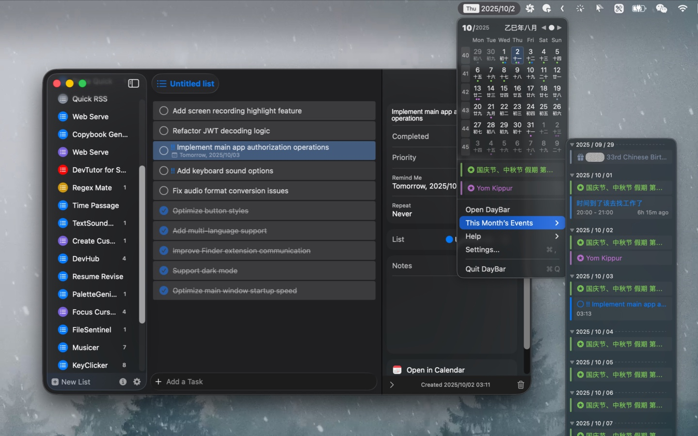
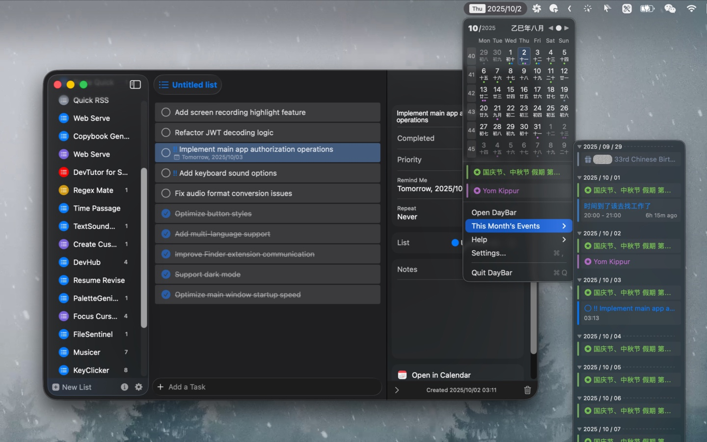

DayBar is an application that displays the local date and reminder events in the menu bar. Click on DayBar in the menu bar to view the calendar, calendar events, and reminders, and it supports synchronization with Apple Calendar. It integrates calendar and reminder functions into the status bar menu for easy management and viewing, while turning reminders into simple and beautiful to-do items.